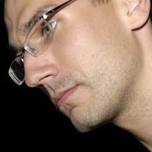

Mission
$ git init
Git is an extremely powerful tool, which (and most of you wouldn't agree with) is quite simple at it's core
idea.
This workshops are there to help you master git usage, help you understand it's core ideas
and create a space for sharing knowledge about Git version control system.
Welcome!
Time and place
$ git cherry-pick LOCATION
Git kata takes place on Saturday, March, 23rd.
You may sleep well as we'll be starting about 11am.
Agenda
- 11.00 Registration
- 11.30 Welcome
- 11.45 Coding catas
- 14.00 Lunch
- 18.00 Ending
- 19.00 Beer
Localization
Warsaw, Poland. TBA
Registration
$ git pull-request
The registration has started!
To join us on March, 23rd, go to the
registration repository.
Fork us, make ANY change in the source code (we count on your creativity)
and submit a pull request.
Yeah, that's right - accepted pull request means accepted attendee! We couldn't thought
that any geeker, could we? :-)
Sponsors
$ git helpWe're looking for sponsors - contact us
Partners
$ git add -pMentors
$ git config --global user.name
More info about mentors soon.
If you're intersted in mentoring - contact us.
At this moment mentors are:
Mateusz Harasymczuk
Hi, my name is Matt and I am an Developer Evangelist.
I try to commit to my work and every single task. It gives me a huge
satisfaction and power to live my life. Moreover I try to share my
passion with my colleagues and everyone around me. I really do believe
in team work. I hope, that I'll be able to infect you with my
optimism. In return I expect to learn as much as it is possible from
you!
I really do believe in Agile, Scrum, Clean Code, Strict Coding Styles
and Open Standards!
Jakub Nabrdalik

I am a software developer who cares about Software Craftsmanship and Domain Design.
I've been Practicing Test-driven development and Pair programming since 2005.
I work at TouK, where I code (Groovy and Java),
lead teams, manage projects and do other fun stuff. Sometimes I also give talks
at Java conferences, WJUG meetings, and hackathons. I strongly believe in benefits of good work,
clean code and maintainable software.
You can find my blog at blog.solidcraft.eu.
Wojtek Erbetowski
 I am a co-leader of Warsaw Java User Group, organizer of Warsjava 2012, Warsaw CodeRetreat 2013,
NameCollision hackathon and Git kata workshops. I work in
Polidea as a backend development technical leader,
programming with Groovy, Python, Scala and Java.
I am a co-leader of Warsaw Java User Group, organizer of Warsjava 2012, Warsaw CodeRetreat 2013,
NameCollision hackathon and Git kata workshops. I work in
Polidea as a backend development technical leader,
programming with Groovy, Python, Scala and Java.
Grab a good opportunity to talk to me about upcoming dev events and Git development.
Lukasz Siwinski
I live in Warsaw, day by
day planting & weeding code in
Pekao S.A., usually with Java
on JEE platform. I consider Eclipse, Vim & Shell as my favourite
tools. I'm addicted to very short aliases & keyboard
shortcuts.
In spare time I like to learn new tools & programming languages.
Lately Git is the toy of choice and it's more and more
inteteresting the more I learn about it.
Apart of above I write
blog about things that
are useful & relevant for me, learn to play the guitar
and continously expand my music collection. I had lead a couple
nice parties as DJ.
- Michał Bareja
- Mateusz Grzechociński
- Grzegorz Kubiak
- Marcin Zajączkowski
Organizers
$ git blame Wojtek Erbetowski, Maciej Sawicki, Łukasz Siwiński